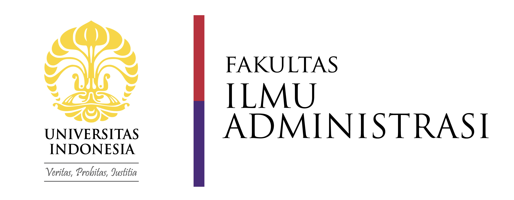
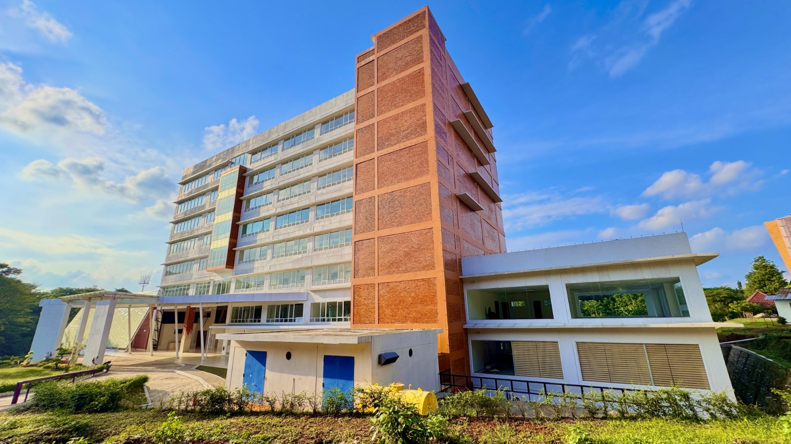
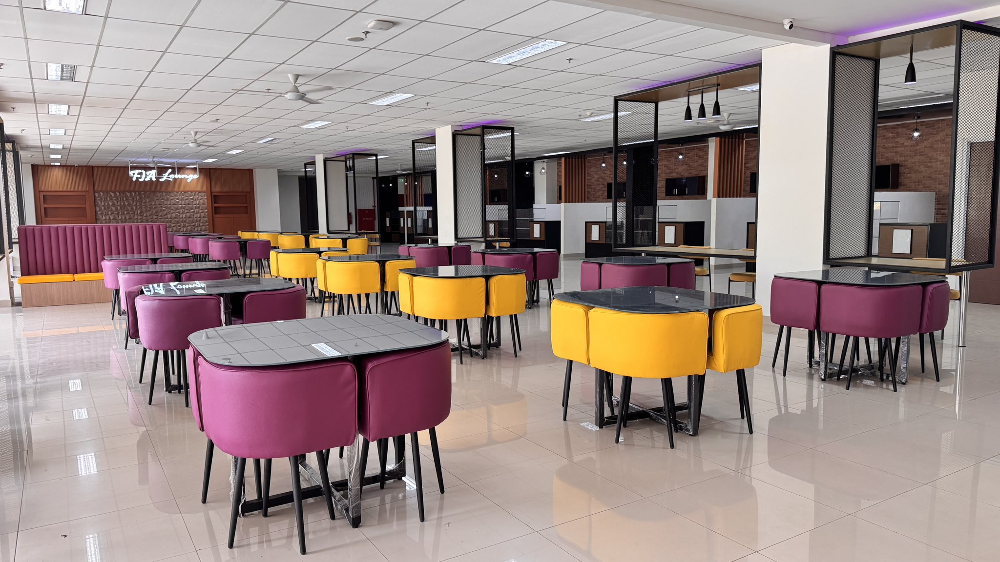
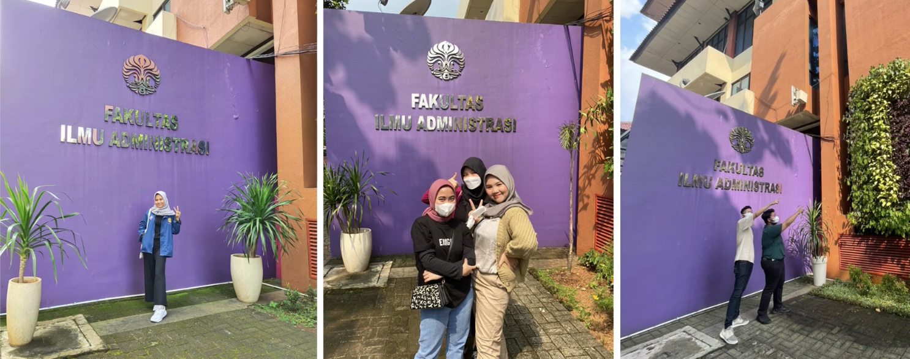
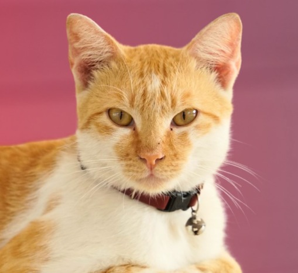

Seiring berjalannya waktu, lingkungan FIA UI mengalami berbagai perkembangan yang membentuk identitasnya hingga saat ini. Setelah sepuluh tahun berdiri, FIA akhirnya memiliki gedung baru yang menjadi pusat kegiatan akademik dan non-akademik. Perubahan ini juga terlihat pada area kegiatan mahasiswa, dari kantin lama Bamen hingga hadirnya FIA Lounge. Elemen-elemen ikonik seperti tembok ungu dan kucing kampus bernama Adhi menjadi ciri khas lingkungan FIA.